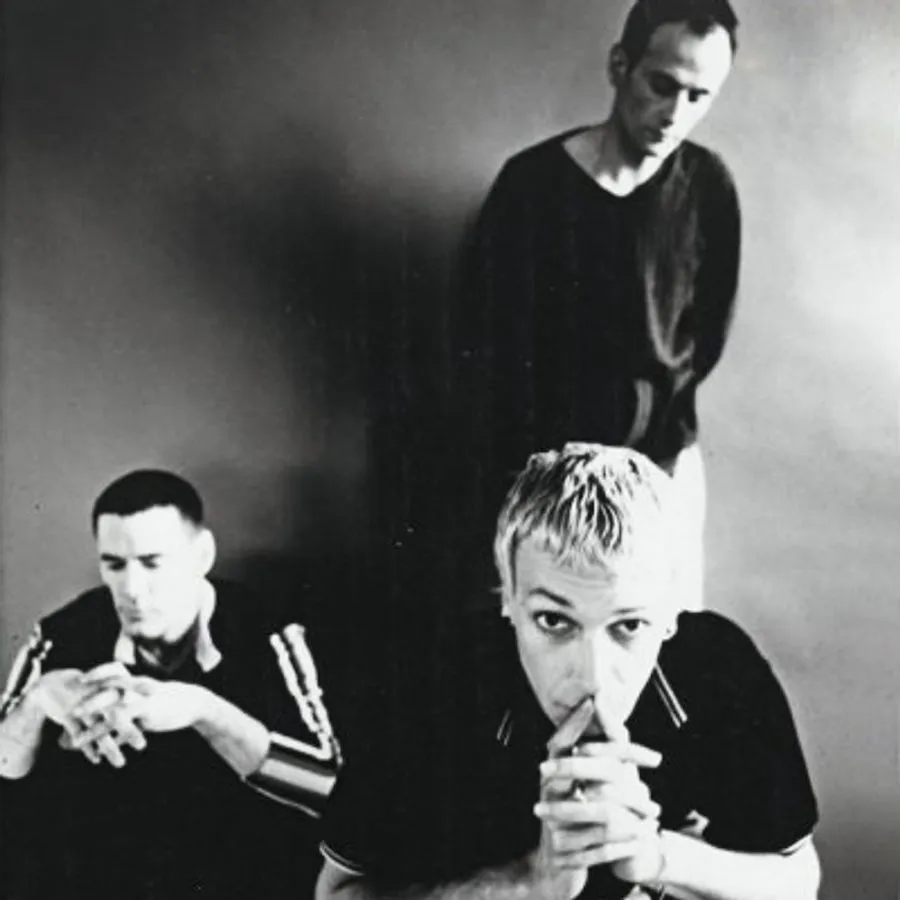

FLUKE : AN INFLUENCE ON THE GENRE THAT CAN STILL BE FELT TODAY
15 March 2024

Fluke is a British electronic music group formed in the late 1980s. Its members are Mike Bryant, Jon Fugler and Mike Tournier. Their musical style combines elements of techno,
house, break beat and other electronic genres. They have participated in the production of soundtracks for films, video games and commercials. Fluke made a significant impact in the 1990s electronic
scene and continues to have a devoted fan base.
In addition to their work as a band, Fluke members were also involved in side projects and produced music for a variety of media.
Their beginnings were in the underground electronic music scene, but it was in the 1990s that they really found commercial success.
Their first album, “The Techno Rose of Blighty”, was released in 1991, but it was their second album, “Six Wheels on My Wagon”, released in 1993, that catapulted them into the limelight.
This album included hit singles like “Slid” and “Electric Guitar”, which drew attention to their unique style blending elements of techno, house and break beat.
In 1995, Fluke released their third album, “Oto”, which included the hit single “Atom Bomb”. This track is probably their most iconic song and has been used extensively in different projects.
The popularity of “Atom Bomb” helped broaden Fluke’s audience beyond the traditional electronic scene.
Fluke continued to release music and play live throughout the 1990s and 2000s.
Although Fluke haven’t released a new album in some time, their music continues to be appreciated by electronic music fans around the world, and their influence on the genre can still be felt today.
Having met Fluke through the track “Zion”, the soundtrack of the movie “Matrix Reloaded”, this music lulled my childhood. On a personal level,
this music will remain an emblem, a pillar of electronic music. If you’ve never seen the movie scene which the entire population of “Sion” dances, turn yourself in.
We leave you with this scene, which has been echoing in the heads of many fans for years.